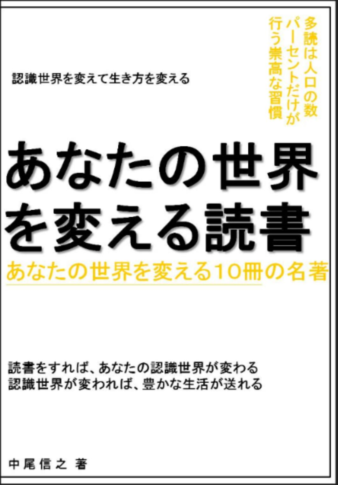

| あなたの世界を変える読書12 あなたの世界を変える10冊の名著 あなたの世界を変える読書 あなたの世界を変える１０冊の名著 | |
| 中尾信之 | |
| (2019) | |
あなたの世界を変える読書１２
あなたの世界を変える１０冊の名著
□はじめに
・小さな一歩が大きな差を生む
□第一章 生き方のヒントをくれる本
１．シンプルに考える 森川 亮
２．人生はタイムマネジメントで変わる！
１週間で身につくタイムマネジメント マスターワークブック
３．起業のリアル 若手起業家・田原総一朗（インタビュアー）
４．どうして、あの人は私を紹介してくれるのか？ 今井秀司
５．心の営業 お客様がお客様を紹介してくださる営業 田中敏則
□第二章 世界のとらえ方を変える本
６．予見力 苫米地英人
７．深く考えるための 最強のノート術
年収１億稼ぐための思考法 午堂登紀雄
８．企業の「稼ぐ」力をいかに高めるか 大前研一
９．ジャパンファースト 苫米地英人
１０．グルメ多動力 堀江貴文
□おわりに
・無限の可能性 自由な世界
あなたの世界を変える読書１２
あなたの世界を変える１０冊の名著
□はじめに
・小さな一歩が大きな差を生む
本シリーズは、キンドル読み放題書籍の中から、私が面白いと思った本を紹介させて頂いているシリーズである。２０１８年の３月からスタートした試みは、今月でちょうと１年を迎えることになった。今回はシリーズ１２冊目となる。そして、私が１年前から電子書籍を書き始めてから、本書は６７冊目になる。大学時代にインターネットに触れてから、ブログを書くようになり、書くということが日課になっていたが、書籍にまとめるということを始めたのは、１年前が初めてであった。
いつかは、本を出したいと思い数冊分はアイデアを温めたり、物語を書いて出版社の賞に応募するなどしていたが、結局、書籍化は実現していなかった。しかし、電子書籍を読んでいる中で、アマゾンキンドルのことを目にして、初めてトライしたのが１年前なのである。そこからは、毎日のようにパソコンに向かって文字を書くことを続けている。書くことが私にとって、楽しめるライフワークだからである。同時にアウトプットに必要な情報インプットである読書についても日々継続中である。
そうこうしているうちに、おそらく私の脳内には少しずつ新しいゲシュタルトが構築されていって、知識と知識のつながりがしやすい状態ができつつあるのではないだろうか。今までも記載してきたように、ゲシュタルトができることで、知のシナジー効果が生まれ、小さな情報インプットから、それにつながるいろいろな思考が生まれるように脳内ネットワークが活発な状態にできているのであろう。
そして同時に、頭（心）のことだけではなく、頭（心）と相互連携している体のメンテナンスについても、この１年の間に注意をして過ごすようにしてきた。体を上手くコントロールできていなければ、体にリンクした頭の働きも確実に鈍るからである。大雨の日をのぞいて、できるだけ歩くことや体の柔軟性を増すことを心掛けてきた。食べ物や食べる量についても、自分なりの試行錯誤をして、自分が納得できるようにしてきたのである。
そうすることで、同じ暮らしをしていても、私の世界は以前より晴れやかになり、曇ったレンズで目の前の世界を見ることはなくなった。ポジティブなセルフトーク（自分への声掛け）を心掛けることで、自分が自由であり、目の前に、いろいろな可能性が開かれていることを感じることが自然になった。
私にとっては、キンドルで文字を書いてみるという小さな一歩が、はたまた読み放題で多読をするという小さな一歩が、私に新しい世界の広がりをくれているのである。今回も、いろいろな新しい世界の扉が開くような書籍を紹介したいと思っている。
私が、本シリーズで紹介した時点では、読み放題対象だった書籍が、その後、読み放題ではなくなっているものも出てきていますが、その点はご容赦を頂きたく思っています。そのような書籍については、私の推薦文を読むことで要点部分をご理解頂くか、興味を持たれた場合は、ご購入頂くか、その作者の他の読み放題書籍を手にとって頂ければと考えています。その点、ご了承頂きたく、よろしくお願いいたします。
□第一章 生き方のヒントをくれる本
１．シンプルに考える 森川 亮
本書はＬＩＮＥの社長をされていた森川さんが同社社長を退任されてから出版された本である。シンプルに考えるという題名どおり、ビジネスを行うにあたって、ひたすらシンプルに考えを整理して一点集中していることが伺える。
ビジネスの本質は「ユーザーが本当に求めているものと提供し続けること」それ以外にはないという言葉が繰り返される。そして、会社組織の運営や評価も、その本質をつらぬいていくために、必要な体制を整えていくという一貫性が非常に分かりやすい。
ユーザーが求めているものを提供するということは、技術者があれもこれもとオーバースペックな機能を盛り込むことを排除するということである。ＬＩＮＥもフェイスブックもサービス提供当初は非常にシンプルなコミュニケーションをとることを提供するサービスでしかなかった。そのシンプルなプラットフォームやツールをユーザーが求めていたということである。
ユーザー視点に立つならば、煩わしい大きな広告を画面の入り口などに表示しないというような考えを大切にし、マネタイズの仕方は、別の方法を考えるということになるという。そういう意味で本書でも指摘されているように、ユーザーが求めていないようなハイスペックの機能を家電製品が詰め込みすぎることは、ユーザーのためではないということになる。このように、競合視点よりもユーザー視点という森川さんの考えは非常に分かりやすい。競合の動きに一喜一憂するのではなく、自分達が何をユーザーに提供すべきか、ということ一点に集中するということである。
あれほど、楽しかったミクシィがつまらなくなりだしたのは、ミクシィが他社のやっているツイッターのようなつぶやき機能を付けた時だった。アメーバもつぶやき機能のようなものをつけていたが、それよりもピグ（２０１９年内のサービス停止が公表され、新たに携帯ベースのピグパーティというサービスが開始）や、もともとのブログ機能で今も多くのユーザーを確保している。そしてまた、アベマＴＶという新しいメディア事業にも打ってでている。
「ユーザーが本当に求めているものを提供し続けること」という原点が社員に共有されていれば、いろいろなビジョンや企業理念を書面にする必要もないという考えも非常に理解しやすい。本書でも記載されているように朝礼で経営理念やビジョンを揃って読み上げるような形式的な行為自体が理念の形骸化となり、無駄なことであるというのは、私も実感として身にしみていることである。
本書では、現場が意思決定力を持ち、環境に即応していけるように権限移譲を行うこと、評価をするにあたっても複雑な評価であればあるほど納得感がないため、本当に頑張った人が報われるシンプルな３６０度評価にすることなど、現場が最大限の力を発揮できるような環境づくりを社長の役割と定義している。このようなシンプルな組織人事に関する考えを、実際に制度として運用している点が、強い組織を作っていく基本であると再認識することができた。
現場が意思決定を持つということは、野球型の管理型のゲームではなく、サッカー型のゲームになるという例えも分かりやすく表現されている。このことは、２０年ほど前から組織人事コンサルタントの高橋俊介さんがサッカー型組織の重要性を説かれていたことともつながる。
考えてみれば、これは当たり前のことであるが、マネジメントは単に管理をするのではなく、現場にまかせて変化に即応してもらう、新しいビジネスも現場でどんどん生み出してもらうのが良いのである。しかし、たいていは、いちいち小さなことに口をはさむマイクロマネジメントしかできず、結果を出すための環境づくりや、前述の本当に必要な納得性のある評価制度の見直しや、実力のある人が評価される文化、単なる社内政治家のような人がいづらくするような文化づくりの重要性を知らないマネジメントもいるわけである。
このような考え方は、以前、尾原さんの本を紹介した際にも記したが、性善説で組織が動けるような文化を作るということである。その性善説の文化をまわすためには、そのような文化を壊す人間、たとえば善人の足を引っ張る人がいづらいようにするということである。そういう意味でも３６０度評価は意味があるのではないだろうか。この文脈からつながる話としては、ＬＩＮＥではお互いが分かりにくい言葉を使わずに、率直に議論をしあうということが紹介されている。
日本人だけではない、いろいろな国の人が一緒に働いている環境では、曖昧な表現でニュアンスを読んでもらうようなことが難しい。お互いが明確に考えていることを議論しながら、サービスをくみ上げていくということである。言いたいことが言えないというような古い文化の会社では、現在の環境に取り残されるということである。人の批判をするのではなく、ファクトを共有して議論するということである。
マネジメントは管理ではなく、自由を促進することでイノベーションが生まれやすい環境にしていくという考えにも共感が持てる。これは私が「購買本部は本当に必要か スタッフ機能のあるべき姿を求めて」に記したように極端に内部統制を高めることより、良いサービスを生み出すことに労力を使った方が良いと考えているのと同じ考えであり、そうするためにも、性善説で動く組織づくりが必要だということである。ユーザーの気持ちが分かるためにも、自分の気持ちも分かる人間にならねばならないという考え方も、ＡＩ時代の人間の在りようを示唆しているようにも思われる。
サービスの考え方、組織の考え方、人生の考え方に一貫性がある考え方が提示されており、目の前の霧が晴れるような作品である。
２．人生はタイムマネジメントで変わる！
１週間で身につくタイムマネジメント マスターワークブック
本書の題名をみた際に、プロジェクトマネジメントや、単なる日々の時間管理のための書籍と思って開いてみたが、それよりも大きな人生の設計に役立つ書籍であり、期待を上回る内容であったので紹介したい。
ここで紹介されているタイムマネジメントは人生そのものを変えるプランニングであり、この方法論があれば、目的地が明らかになり、道に迷うことをさけられ、迷っても戻って来られるような地図を持つということなのである。
この方法論を考えたコヴィー博士は「すべてのものは二度つくられる」という考えを持っている。まずは、設計や計画の知的創造があり、これを設計図にそって実際に作る行為に分かれるのだという。確かに、そう考えると、人生においても、このように実践の前の設計、プランニングがあったほうが良いというのは理にかなっている。コヴィー博士の本のサマリーも読み放題対象となっているので、興味がある方は以下も参考にして頂きたい 。 Summary: The 7 Habits of Highly Effective People: Review and Analysis of Covey's Book (English Edition)
このサマリーシリーズの中には、同じように人生の計画を立てていくものや、人生の成功をデザインするための本が複数あり、英語に慣れることにもつながるので、おすすめである。
本書によれば、私たちの行動の、もっとも根柢に、「価値観の明確化があり」、次に「目標の設定がある」、そして、「週間計画」や「日々の計画」がある。価値観という土台が、きっちりと据えられていれば、ひとつひとつの意思決定や行動にブレがでないというのである。目標も、価値観からずれていては、本当の満足につながらないし、また時々の目標は通過点でしかないという位置づけで整理されている。そして、それぞれの目標は価値観との整合性を取るようにすることが良いとされる。
たとえば、以下のような思考実験をした場合に、自分の価値観を発見することができ、本当に自分がしたいものと向き合うことができるという。
「本当によかったと思える時」、「あこがれの人物リスト」、「週刊誌の記事はどんな内容」、「２０年後のあなたのインタビュー」、「会社を去る時になんといわれたい」、「１００億円をなにに使う（１か月で配り終えないといけない条件）」、「余命一年での行動リスト」、「あと１００年人生の行動リスト」
いくつかは、イメージがしにくいかもしれないが、確かに「余命一年の行動リスト」ということをイメージしてみれば、待ったなしでやりたいことが優先度とともに検討できるに違いない。そして、そのうちのいくつかは本当にすぐにできるものがあることに気づくことができるのではないだろうか。今回、７冊目で紹介する書籍とあわせて、これらを思考ノートで整理をして行動につなげれば、自分のやりたいことにフォーカスすることが簡単になり、生活は大きく変わっていくものと思われる。
３．起業のリアル 若手起業家・田原総一朗（インタビュアー）
田原総一朗さんが多くの経営者の方々にインタビューをした内容を集めた読みやすい一冊である。１冊目で紹介した森川さんもこの中に登場されている。２０年ほどまえに、田原さんの本を読んでいた時期があるが、当時の書籍の印象としては、インパクトのあるインタビュー内容を記載はしているが、本としては、まとまっていないような印象を受けていた。本書は、インタビューをもとに構成されており、またひとつひとつのインタビューは長くなりすぎないように整理されているため、田原さんの文章に満足できない人にも試して頂ける内容になっている。
面白いのは、田原さんも、それぞれのインタビューのあとの感想で書いているように、最近の若い経営者は、組織の規模や売上規模ばかりを追い求めていなかったり、利益を上げることばかりにこだわっていないという点である。それよりも、自分たちが本当にやりたいことや、面白いと思えることをやり続けたい姿勢があるように思われる。そして、正解はひとつではなく、ひとりひとりが、いろいろな試行錯誤をして、それぞれのやり方を模索している点が、非常に参考になると思うのである。だから、組織体も、一般の会社という形だけにもこだわらずに、ＮＰＯや、いろいろな組織の在り方も、それにあわせて考えていけるということである。
そのような柔軟な考えを持っている若者こそ、これからの時代を切り開いていけるのではないだろうか。デジタルネイティブと呼ばれる世代と、大人になってから携帯電話が広がりだした私たちの世代とは、明らかに育ち方も違う。私も田原さんと同じで、そのような若い世代に多いに期待をしているものである。
これからは、今までこのシリーズで紹介してきた書籍にもあるように、ひとりが、ひとつの仕事だけに集中するのではなく、いくつかの仕事でポートフォリオを組んで、リスクを分散させながら、楽しみを広げていくやり方が当たり前になってくるものと思われる。ポートフォリオは時間軸で分けてもいいし、同時期にいくつかを並行させることも、その人のタイミングごとで考えればいいのである。そのようにしておけば、何かの時に、あたためていた芽が大きく育つこともあるかもしれない。
４．どうして、あの人は私を紹介してくれるのか？ 今井秀司
今回は、２冊営業に関する本を紹介したいと考えている。私自身、役割として正式に法人営業をしていたことが何度かあるし、営業職ではない場合も、営業的な感覚を持って仕事をすることを大切にしてきた。そのような経験も踏まえて、今回紹介する２冊で、みなさまと共に、自分の方法論を見直し深化させたいと思ったのである。この２冊は、一度サービスをしたお客様に、別のお客様を紹介頂くという「紹介営業」が大きなテーマとなっているところが共通している。
これを、私はテコの原理のように理解をしている。自分の力だけではなく、お客様の方の力もお借りすることによって、効率よく仕事を増やしていこうということである。私の言葉で言えば、お客様ともワンチームになって仕事をすることで、お客様との距離感が非常に近くなるということである。そうすれば、この人と一緒にまた仕事がしたいとか、助けになってあげたいというふうに思って頂くことが可能であると考えている。ワンチームになるということに関しては、「はじめてのチームマネジメント ワンチーム・ビルダーを目指して」という本にまとめさせて頂いているので、興味を持たれた方は手にとって頂けたらと思う。
今井さんは、営業の役割を、機会の創出や、価値の創出、顧客利益の最大化というふうに定義をされている。そして、この営業の考えを極めれば、営業以外の仕事にも役立つプロになることができると指摘する。当然、営業を極めるには、努力のベクトルが大切なため、方法論を考えることなく、ノルマにそって下手な鉄砲を数打つだけでは意味がない。これは、以前に、紹介した野村監督の野球を極める際の考え方と同じである。間違ったフォームや、自分にあわない練習方法に時間を費やしても、成果につながらない。創意工夫は正しくやる必要があるのである。正しいインプットをして正しいアウトプットを得るということである。
今井さんの仕事観からは、数字に追われる暗い営業とは違い、信頼を得ることで、紹介が紹介を生むような価値創出の好循環が生まれるような営業を楽しくやろうという明るいイメージを受け取ることができる。「生きるために働くのであり、働くために生きるのではない」という言葉からも、そのことが伝わってくるのである。
お客様が、契約をするかどうかは、会社のサービスやものについての品質はもちろんのこと、営業の人間の価値を認めて頂くことではじめて、契約にいたる。そこにおいて、営業の人間の存在は本来重要なものである。各社のサービスが似通ってきた場合などには、営業が信頼できるかどうかが判断基準になる。なぜなら、問題が発生した際のリカバリー対応などには、営業がどれだけ迅速に問題解決のために動いてくれるかということが重要になるからである。
だからこそ、今井さんに言わせれば、極論すれば、サービス品質で多少負けていても、営業人材の質で契約を切り替えることにもなりうるのだという。まさに、営業の人間は、会社の価値を体現しているような存在なのである。そう考えると、今井さんがいうように、「たかが見た目、されど見た目」で、見た目にも気を配り、自分が信頼できる人間であるという最低限の身だしなみを整えておくことは大切である。今井さんの本でも、次に紹介する方の本でも、営業は事前に下準備をきちんとしたり慎重に動くことも大切なため、口下手なくらいがちょうど良いということも指摘されている。
５．心の営業 お客様がお客様を紹介してくださる営業 田中敏則
約３０年の住宅営業人生で１０００棟の家屋を販売した経験を持つ方の話である。私の場合、たとえば道端で、住宅の展示即売をされている人を見かけた際は、声をかけられないように離れたところを歩くか、目をあわさないようにしている。積極的に営業をかける人員を抱えているということは、それ自体、その物件の販売コストが物件の購入費用にのっていると私の場合は考えるから、それが良い買い物と思えないからである。
住宅の購入というのは、それだけ大きな意思決定であり、どの会社が手掛けるということのみならず、誰から買うかということも購入者にとっては重要なことと言えそうである。本書では、基本的に一般的な新規営業をしておらず、すべて過去のお客様からのご紹介営業で、好循環を生み出しているという、卓越した営業スタイルが紹介されている。
営業を職業にしている方々をメインターゲットとして書かれた内容ではあるが、仕事の考え方や、生き方を考えるうえで、営業という職種の枠を超えて、参考にすることができる。そもそも田中さんは、営業は、総合的な視野を持ち橋渡しに撤するものだと定義している。４冊目で紹介した今井さんと同じで、営業という言葉を狭くとらえていないのである。
かといって、何から何まで自分でするというわけではない。橋渡しが役割であるから、チームとして必要なプロの手を利用するというわけである。例えば、雨漏りを自ら修繕する営業マンがいるようであるが、田中さんに言わせると雨漏りはプロが直すのが一番であり、営業マンが雨漏りを直すのは、不安が残る行為であるという。何がお客様の不安を取り除くのに最も、適切かを常に考え、自分の役割をきっちりとわきまえて行動をされているのである。
このように、１０００棟もの契約が積み重なった背景には、根性論ではなく、田中さんなりの営業に関する考え方があり、方法論をきちんと持たれているということである。そして、それらは小手先のテクニックではなく、本当にお客様のためという基本的な徹底的な顧客思考のマインドがある。それを貫くための前提には、もちろん積水ハウスの建物が素晴らしいと本人が心から信じられているという点も大きい。
非常に面白い点は、信頼される紹介営業は、口下手でも良いという点である。口先のテクニックではなく、お客様のことを思う行動をし、必要なことをお伝えし、意思決定を手助けすることで、信頼を得ることは口下手でも可能ということなのだ。素晴らしいのはクレームを伝えてきたお客様に対して、できうる限り誠実に対応することで、逆に深い信頼を得ることができるという点である。このことは、工場部品のネット販売に携わっていた際に私も経験したことがある。前任者が担当した商品説明の記載が十分ではなかったために、お客様が品質について不満を持たれたのである。そのクレームを受けて私はすぐに返送の手配をし、商品を確認し、メーカー様とも相談のうえ、商品の説明を追加し、お客様には、一ランク上の商品を代品としてお届けした。こちらの商品説明の記載に落ち度があったためである。そのことでお客様からは感謝の連絡を頂いた。その他にも、何度か丁寧な対応をすることで感謝のお言葉を頂いたことがあった。いずれもクレームから始まった対応であった。
住宅販売に関わる営業マンが、お客様を大切にするなら、自然と建築中の現場を大切にするようになるという。お客様の気持ちは建築中の自分の家にあるのだから、その現場を営業マンが忙しいからといって軽視すると、お客様の気持ちに答えられないことにつながる。住宅購入という大きな意思決定をして、いろいろな心配を持っているお客様の不安を取り除いてあげることで、お客様に頼りにされ信頼を得ることができ、ひいては、新しいお客様に推薦をして頂けるようになるというのである。
現場を大切にすると、現場で働く人々も、さらに現場で力を発揮してくれる。そして田中さんはお客様以外のかたにもポリシーとして敬語で話をされるようである。人を性善説でとらえて信頼しなければ、信頼されることもなく、心がつながりにくいためであろう。私も、自分よりも年下の人も含めて、「さん」づけをすることが大切だと考えている。
資料は、見栄えより中身であり、資料に思いが込められていれば、資料からも気持ちが伝えられるという考え方も素晴らしいと感じた。実際、この本を読んでいて、田中さんという人は、丁寧で間違いのない仕事をしてくださる方であろうということが、言葉の選び方も含めて文面から伝わってくる内容であった。私たちが、どのような仕事をするに際しても、田中さんのように相手に信頼をして頂けるような働き方をすることで、他の人とは異なった仕事の深め方をすることができるのではないかと感じることができた。
□第二章 世界のとらえ方を変える本
６．予見力 苫米地英人
本書のコンセプトは、未来の視点から現在に未来の芽を探しだし、さらには、あらゆる可能な未来の中から自分の望む未来を作り出していこうというものである。個々人としても、集合体としての日本人としても、そのようにより良い未来を望むことを提唱している内容である。
もともと私たちには、ＡＩがにわかに流行りだしたようにうつるが、苫米地さんは１９８０年代から人工知能の研究に参加しており、現在は、それらを実用する技術が追いつきコストが安くなったことで、やっと実用段階に入ってきただけであると他の書籍でも記されている。つまり、苫米地さんには、現在のことが当時から予測できていたということである。本書で例にあげられているのは、リーマンショックに関することである。もともと、製造という実態経済をおろそかにして、自動車会社ですら金融行為に走ったアメリカの経済の実力や、アメリカの金融業界のモラルハザードがいずれは破綻することが、しっかりと見えていたのだという。
我々は過去から現在、未来へと時が流れているように考えがちであるが、筆者は未来から現在、過去に時間が流れる感覚を持つことの重要性を説く。そして、さらに突き詰めれば一念三千と言われる仏教の考えにいきつく。これは、未来も現在も過去もすべてがこの一瞬に内包されているという考え方である。過去はあくまで記憶の中で、思い出す際に再合成されているにすぎないものであり、人は毎回それらを作り出しており、明確な形で保管されているわけではないため、それらを、時々に解釈をしているだけであるという。だからこそ、筆者は、現在の自分があるのは、最高の選択をしてきた結果であると認識すべきであるという。
ありうべき選択をするということは、自分が自由意思に基づいて自分の生き方を選択していくことである。また、国家としては、あらゆる他国や、あらゆる組織に従属せず、自分たちのための選択を自由意思で行うということである。面白いのは、核兵器は自国で持たなくても、複数国と原子力潜水艦のリース契約を結べば、これによって安全は保たれ、現在の５兆円の軍事費用より、効率的な安全が確保されるという提案をしている点である。実際、インドはロシアの原子力潜水艦をリースしているという。また、この考えをさらに進めて、５兆円を世界の飢餓を救うための食料に使うという案も提示している。別途、サイバー防衛の本などでは、現在の戦争はサイバー空間が主戦場であるため、そちらの増強こそ、安全と平和を守るためのものであるという提言もなされている。ＩＯＴであらゆるものがネットにつながった社会では、サイバー防衛が生活インフラの根幹に関わるからである。
共産党のサイトの数値によると、２０１８年の米軍への支払いは８０２２億円と推定されている。この中には米軍が自分で負担すべき２０００億円の「思いやり予算」と呼ばれている費用まで含まれる。しかし、実際、アメリカは自国の利益のために日本の制空権と、基地を使用しているのであって、日本を守るために対等な契約をして存在しているわけではない。お金を払って守らせるのであれば、対等な契約をして、業務の命令できる必要があるにも関わらず、お金は取られるは、従属させられるは、古い武器は買わされるは不平等条件も甚だしい。そういう意味でも、国家としても予見力を発揮して、自由意思でより良い選択をすべきなのである。本書の後半で、市民が目覚めることの重要性を説いている。また言わずもがなではあるが、主権者が選挙権を正しく行使することの重要性も説かれている。
７．深く考えるための最強のノート術 年収１億稼ぐための思考法
午堂登紀雄
いろいろな成功哲学の本が巷に溢れ、またいろいろなノート術、メモ術も溢れている。それらの多くは、内容が薄かったり、実践しずらいものであったりして、手にとっても最後まで読もうと思えるものが少ないのではないかと思われる。特に題名に１億円などと金額が書かれていると、私などは敬遠してしまう面もある。しかし、本書は非常に論理的に考えられており、決して適当な内容ではないことが伝わってくる書籍である。
いままで、「あなたの世界を変える読書」シリーズでも、いろいろ世界のとらえ方を変えるための書籍を紹介してきた。自分が世界の認識の仕方を変えれば、実際に、自分の認識と行動を変えることができるという考え方であるが、それを実装していくためには、さらにもう一歩、考え方のツールがあった方が良いようにも思われる。なぜなら、大きな目標があって、見える世界が変わっても、ひとつひとつの実際の行動がリンクしていないと、なかなか結果を生み出していくことが難しいからである。そういう意味で、やりたいことや大きな目標の記載だけではなく、これらを優先度付けし、そしてアクションまでブレークダウンして、実践していくことにつながるノートの活用術は有用であると言える。
いろいろと頭の中で考えることがあっても、それが紙やパソコンなどの画面に落ちていないと、頭の中で曖昧なままであって整理がしにくいのが普通である。そして、あれも、これもといろいろなことを考えているうちに、考えたことを忘れてしまうのである。忘れないようにしようとしていると、思考に余裕がなくなったりもする。そういう意味で午堂さんは、ノートの役割を、以下の６つの役割として整理している。
・脳外ハードディスク
・脳内クリーナー
・思考力強化養成ギプス
・ブレイン・インストーラー
・アイデア量産
・熟成ツール
・自己実現への自動追尾装置。
このような言葉は、ともかくとして、一時、ノートに書いて整理するだけではなく見直してさらに考えることができ、つながるキーワードに出会った時には追記をしていくことができるというのも確かに有効であると思われる。
マス目がないノートを推奨されているのも、自由に思考を広げるために参考になる点である。私はエクセルにいろいろなことを記載してとどめているが、確かにマス目の枠に考えが制限されているように思うことがある。単に整理をするだけならそれでいいのかもしれないが発想を広げていく際には、マス目は邪魔になるのではないだろうか。
題名に「深く考えるための」という言葉があるように、ノートを考えるツールとして有効活用することで、大きな目標と、足元のことの間をつないでいける思考力を提供してくれる書籍であると感じることができた。
８．企業の「稼ぐ」力をいかに高めるか 大前研一
シリーズ第一弾の冒頭で、私が大前さんの「平成維新」と出会って感銘を受け、その影響もあり公務員を２年で辞めたという経緯を紹介した。この２０年も大前さんは相変わらず、多くの書籍を出版され大活躍のようである。私も今は、大前さんが始められたスカイパーフェクトＴＶのビジネス・コンテンツ・チャンネルであるビジネス・ブレークスルーの映像は見ていないが、時々、読み放題で大前さんの書籍を読んでいる。
本書のなかでは、低欲望社会というキーワードが出てくるが、この機会に紙ベースの書籍で購入していた「低欲望社会―「大志なき時代」の新・国富論」も同時に読み直してみた。これは消費者側が成熟社会において、低欲望になるという自然な現象をさしている。低金利でもお金を借りず、また家や車というものに執着しない若者世代。このような低欲望な人が増えている状態が、先進国の中でも日本はいち早く到来しているというのである。
サービスの提供者側から見れば市場では、デジタルディスラプションという大前さんの良く指摘している、もうひとつのキーワードが大きな潮流として起こっている。ディスラプションは分裂とか、崩壊という意味で、あらゆる事柄がデジタルに変わっていくなかで、産業の突然死が発生するということである。製造部門の効率化が進んでいる一方で、日本のホワイトカラー間接部門の生産性の低さを指摘しながら、さりとて効率化を進めても産業自体も突然死するかもしれないという状況がある。
日本企業として、まずいのは、キャッシュに余裕があるからといって、海外の企業を買った場合に、それを健全にコントロールできる経営人材がいないという点であることも指摘されている。買収したのに、もともとの人にまかせるのは危険で、まかせられる人が運営している会社が売りに出されていることはないのだという。だからこそ、買収してコントロールする意欲と自信がなければ安易に買収に乗り出しても、痛い目に会うだけであるという。
市場を良く見てみれば、ＧＤＰが伸びていないからといって、下がっているわけでもなく、消費はなくなったのではなく、チャネルが変わっただけであり、会社の存在価値を見直して付加価値の提供の仕方を考えるべきであるという。「低欲望社会―「大志なき時代」の新・国富論」でも、昔の書籍でも書かれていて面白いと思うのは、国が農業政策のために４２兆円利用したが、それでも農業の生産性は上がっていないが、数千億あれば、世界の食料メジャーが買えるのだから、そのほうが、よほど食の安全に繋がるという指摘である。
また、前述のデジタルディスラプションのからみでは、毎回のよう に Fun to drive agai n や 、 Be a drive r という言葉への皮肉が述べられているのも面白い。車は買うから利用するという概念への変化のなかにあり、まさに概念のディスラプションの中にある。大きな変化を怖がるより、楽しめるような個人と組織こそが、これからの時代を生きやすいのではないだろうか。
９．ジャパンファースト 苫米地英人
本書は、国の政治を考えるうえでの根幹を思考するためのものであるように思われる。２冊目で自分の人生を設計するにあたって、まずは自分の本当の価値観を発見するべきことの重要性が説かれていたが、本書は同じように国政レベルにおいて、誰のために国の政治が存在するのかという根本を問い直すものであった。その考えがはっきりしていないと、為政者と国民の間でコンセンサスがとれていない状態のため、いろいろな議論が食い違うのではないかということも想像できる。
でも国は、誰のためにあるのかというと、間違いなく日本は「国民の思いこそが国」であり、国は国民のためという考えにコンセンサスが取れている必要があるという。筆者は自民党の憲法改正案においては、総理大臣がアメリカの大統領よりも強力な権限を持つという点で警鐘を鳴らしている。アメリカの大統領は大統領令を出すことができても、それを司法が差し止める権利を持っている。ところが、現在の日本においては、三権分立が機能していないがために、司法にこの部分を期待することができない。司法は立法の不備を適切に指摘する権限が機能しておらず、行政機関のトップである内閣は、立法機関の代表が集まって形成されており、議員以外が指名されることは非常に稀である。
過去からの歴史を振り返る中で、アメリカは国家（州）ありき、ヨーロッパは国民し慕われる王ありき、中国は共産党ありき、北朝鮮は委員長のものという背景が紹介されている。日本は、以前、取り上げた落合陽一さんの書籍にもあるように、天皇はあくまで催事を取り扱い、国政の執行権は分けていたが、明治維新後、その部分がないがしろにされ戦争のどろ沼に突き進んだ経緯が本書でも指摘されている。
そして、日本人がよってたつのは、国という器より家族があって、コミュニティがあるという、そのような延長に自然と国があるという概念のとらえ方をされている。私も社会契約論的な考え方が好きであり、個人があってこそ組織が存在しえるという考え方を支持するものである。個々人の権利を大切にしない状態で、国を存続させても、国の体制維持が目的化してしまい、その中に暮らす人々は幸せになれないからである。だからこそ、富国強兵という国を富まして、一般大衆は貧しく清くあれというような考え方には違和感を覚える。国民は主権者なのであるから、主権者が自らの政治を行っていけるようにしなければならないと考えている。
本書は、国は誰のためという根本論に切り込んだ少し概念的な作品であるが、そのコンセンサスなしに、あらゆる国政の議論は食い違ったままのようにも思われる。予見力でも、直接民主制にふれられているが、すでにテクノロジーを有効活用すれば直接民主制は可能なはずである。テクノロジーの進化の結果が、マイナンバーカードを支給されて、手続きが便利になりましたは、あまりに寂しいものである。
１０．グルメ多動力 堀江貴文
グルメ多動力という題名ではあるが、飲食業界だけではなく、それとともにコンビニ業界のことについてもふれられている。生きるためのエネルギーを得るための食べるという行為でいうなれば、確かにレストランやカフェに限らず、コンビニで購入して家で食べるという行為も含まれる。そして、そのコンビニがイートインできるスペースを併設するということが状態化して、飲食業界と競合するような場所に変わりつつあるという。確かに街中のコンビニにはイートインスペースが増えつつある。
アマゾンＧＯのような無人会計システムで、コンビニが自動化、無人化していくことと、イートイン併設ということがセットとして進行する世界に私たちは生きているのである。この無人化がひとつの大きな動きであり、もうひとつはコミュニケーションを大切にするという道であるというのも非常に面白い。
飲食業のひとつの最高の形式はスナックであるという指摘である。食べ物は乾きものや、出前で準備することで在庫リスクはない。しかし、売り物はコミュニケーションを楽しむ場所を提供するということである。食べるということが主体ではなく、コミュニケーションが主体の場、食べることはついでという形がスナックである。
そして、最高の食材で美味しいものを提供するコンビニやスナックの大局にあると思われるサービスですら、技術や食材は真似できるが、コミュニケーションは真似できない部分があるため、実はコミュニケーションが重要であるという。堀江さんは、人の気持ちを大切にしないような捉え方をされることも多かったが、本書を読んでいると、お客さんやお店のことを、しっかりと考えている人だということが分かる。例えば、お店の予約はキャンセルしないことや、時間は厳守することである。
そして、本書の途中の対談形式の部分でも、相手の意見を上手く聞く能力があることがうかがえる。堀江さんが重視する「おいしさを増すための情報の伝達」というのも、結局は人の心は食べ物を味だけではなく、それ以外のサービスも含めて食べているという本質をついていると思うのである。
堀江さんは料理の修業は何年も教えずに修行させることという風習についても以前から批判をされている。時間をかけて丁寧に修行をするというのは、聞こえはいいが、インターネットのシステムを構築しているプログラムは、すべてオープンソースで公開されているがゆえに、いろいろな人の手が加わり書き直されバージョンアップしてきたという歴史がある。同じように料理自体も「ぱっくた、ぱくられた」という次元の話ではなく、本当のプロなら、みんなで料理業界の底上げをしていくようなイノベーションをし続ける土台を作っていくような考え方こそが必要なのだという。
そのような料理のイノベーションを目指す人は、自分の味だけにとらわれることなく、いろいろなものにふれるように多動をしているということもうなずける。これは以前、紹介したザ・シェフでも、主人公の味沢匠に限らず、味沢匠に留守を預けるシェフたちも、自分たちが自分のカラにとじこもらないように、食の探検に世界に出ている姿が垣間見える。味沢匠が自分のお店を持たないように、廃業率の高い、飲食やホテルの業界について、現状の形にこだわらない考え方を推奨する本書は、非常に面白い内容である。個人的には、前半の３割程度を読み進めたあとで面白くなってきたように思われる。
□おわりに
・無限の可能性 自由な世界
現在、私には二人の子供がいる。今までも何度か記してきたように、私は子供ができてから、子供優先の生活を始め、子供との時間を大切に過ごしてきた。子供と一緒に遊ぶということと同時に、子供を観察するという行為を楽しんできたのである。
子供を見ていると、子供には方向付けがされておらず、彼らは無限の可能性を持っていることが見て取れる。そしてまた、生まれたての子供は寝返りすらできず、立ち上がることも、歩くことすらできない。そのような小さな子供が、寝返りをしたり、立ち上がること、一歩歩き出すこと、それだけで非常に大きな進歩であることが分かる。対して、私たち大人は、寝返りをすることも、立ち上がることも、一歩歩くことも、無意識のうちに自由にすることができる。子供にとっては大きな成長である行為を、私たちは毎日のように繰り返しているのである。
子供たちは歩けるようになったことが嬉しくて、他に何もしていなくても、歩くだけで楽しんでニコニコとして時間をすごすことができる。何か特別なことをしていなくてはいけないということはない。どこか特別なところにいかなくてはいけないということもない。歩くこと自体が、楽しいことなのである。観察していて、そのことに気づいた私は、子供たちこそが、釈迦の考えに近いのかもしれないとさえ感じるようになったのである。方向付けをされていない子供たちこそ、人生を歩くことを楽しむことができるのである。
以前も、堀江さんの本や、苫米地さんの本などで、没頭することの重要性を紹介したが、子供たちの没頭力の素晴らしさは、単に歩くという行為だけでも発揮されるのである。そしてまた、子供たちと同じ目線に立ちかえれば、タンポポやナズナや、スズメのかたびらなど、春には日に日に、植物たちが緑を膨らませている。梅や桜、沈丁花やハクモクレンという有名な花たちだけではなく、足元の植物たちの世界にも子供の視点で目をむけることで世界は、明るさを増してゆくだろう。
そしてまた、空からも景色を眺めるような、このふたつの視点を何事に対しても備えることができれば、私たちには無限の可能性が広がっており、そしてその中の何に没頭するか、何にフォーカスして選び取っていくかは、私たち次第だということに気づくことができるのである。
私は、インストールし終えたばかりの自分の「脳内ＯＳ ＦＯＲ ＨＵＭＡＮ ２０１９ ＶＥＲＳＩＯＮ」を日々、アップデートしながら、これからの世界を生きていきたい。これからも、多読を楽しみながら、無限の可能性をさがし、そして新しい一歩を踏み出していきたいと考えている。
今回も、本書を手にして頂き誠にありがとうございました。
また、次回お会いできますように。 中尾信之
□作品紹介

脳内ＯＳ ＦＯＲ ＨＵＭＡＮ ２０１９ ＶＥＲＳＩＯＮ
最新オペレーションシステムをインストールせよ！
https://www.amazon.co.jp/dp/B07N1T1TZF
自分を生きる天職（転職）のすすめ ～１００％実力を表現する面接法～
http://www.amazon.co.jp/dp/B07BD3K67Z
はじめてのチームマネジメント ワンチーム・ビルダーを目指して
https://www.amazon.co.jp/dp/B07BJ98FTT
購買本部は本当に必要か スタッフ機能のあるべき姿を求めて
https://www.amazon.co.jp/dp/B07BQ9BFDS

あなたの世界を変える読書 あなたの世界を変える１０冊の名著
https://www.amazon.co.jp/dp/B07BT28HLV
あなたの世界を変える読書１１ あなたの世界を変える１０冊の名著
https://www.amazon.co.jp/dp/B07N4B2CXD
アニオタ革命 アニオタが世界を変える 銀河英雄伝説 神のみぞ知るセカイ から探る社会変革の可能性
https://www.amazon.co.jp/dp/B07CRQ3WWD
屋内植物園計画 小さなスペースで緑を楽しむ魔法
https://www.amazon.co.jp/dp/B07CWRK2CN
在庫管理の正解 在庫管理は、こんなに簡単だった
https://www.amazon.co.jp/dp/ B07GFS2YDN
新宿御苑の四季 写真集
Four seasons of Shinjuku Gyoen National Garden
https://www.amazon.co.jp/dp/ B07N83G4L5

吟遊物語集 吟遊詩人信